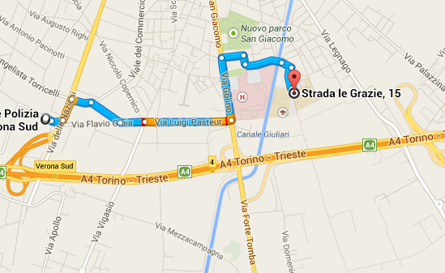
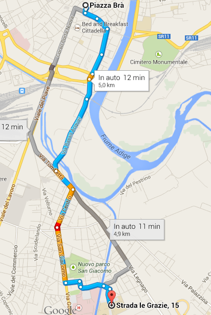
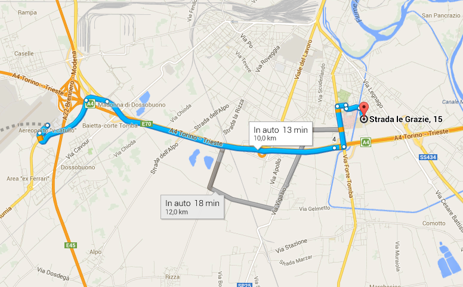
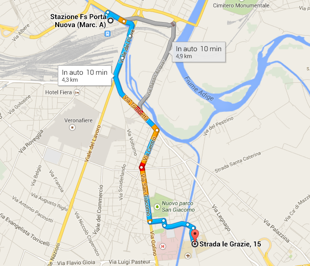

|
Punto di partenza
|
Itinerario
|
|
Autostrada
|

Prendere l'uscita Verona Sud
Segui via Enrico Fermi per poi svolare a dentra in Via Evangelista Torricelli
Prendere la prima a destra e imboccare via Tolomeo per poi svoltare a sinistra in via Luigi Pasteur
Giunto all'incrocio, svoltare a sinistra per via Flavio Gioia, e dopo 700m svoltare a destra per via Bengasi
La via prosegue con via delle Menegone fino a raggiungere il ponte
Dopo il ponte, svoltare a destra per Strada le Grazie, la facoltà è dopo 500m alla vostra sinistra.
|
|
Piazza Brà
|

Inboccare Corso Porta Nuova per poi continuare dopo l'incrocio con Viale Piave
Prendere la galleria mantenendo la sinistra per via Tombetta
Percorre la suddetta per poi svoltare a destra in via Centro. All'incrocio, imboccare via San Giacomo
Al successivo incrocio svolta a sinistra per via Bengasi continuando per via delle Menegone fino a raggiungere il ponte
Dopo il ponte, svoltare a destra per Strada le Grazie, la facoltà è dopo 500m alla vostra sinistra
|
|
Aereoporto
|

Prendi la tangenziale Sud in direzione Verona
Prendete l'uscita Borgo Roma o SS12 per Modena
Svolta a sinistra per via Forte Tomba
All'incrocio svoltare a destra per via Bengasi continuando per via delle Menegone fino a raggiungere il ponte
Dopo il ponte svoltare a destra per Strada le Grazie, la facoltà è dopo 500m alla vostra sinistra
|
|
|
Stazione
|

In auto: Uscito dalla stazione, svoltare a destra per Viale Piave
Prendere la galleria mantenendo la sinistra per via Tombetta
Percorre la suddetta via per poi svoltare a destra in via Centro. All'incrocio imboccare via San Giacomo
Al successivo incrocio svoltare a sinistra per via Bengasi continuando per via delle Menegone fino a raggiungere il ponte
Dopo il ponte, svoltare a destra per Strada le Grazie, la facoltà è dopo 500m alla vostra sinistra
In bus: Prendere la linea 21 in direzione San Giovanni Lupatoto e scendere alla fermata in via Regina Adelaide
La facoltà è a 200m da fermata.
|